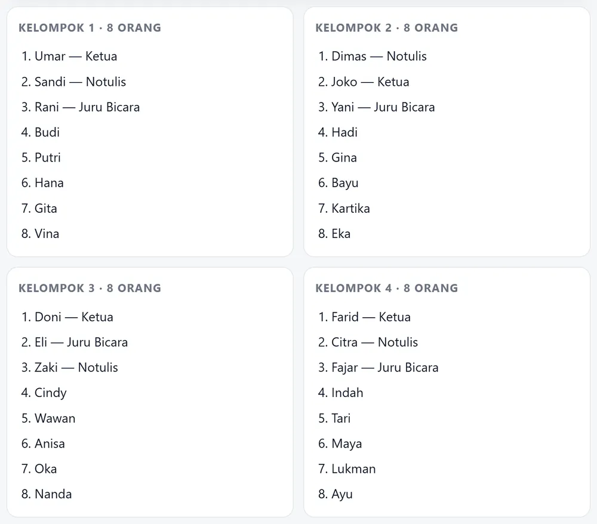

Beranda › Roda nama kelompok
Roda nama kelompok: membagi siswa tanpa pilih kasih
Guru sering memakai roda nama untuk memilih satu siswa, lalu bingung ketika harus membagi kelas menjadi beberapa kelompok. Dua pekerjaan itu berbeda: roda memilih satu nama, pembagi kelompok membagi seluruh daftar sekaligus. Halaman ini menjelaskan kapan memakai yang mana, dan menyediakan keduanya di tempat yang sama.
Buka pembagi kelompok 2–10 kelompok, dengan peran
Roda atau pembagi kelompok: pilih yang sesuai
| Yang ingin dilakukan | Alat yang tepat | Hasil |
|---|---|---|
| Memilih satu siswa untuk menjawab | Roda nama | Satu nama |
| Membagi 32 siswa jadi 4 kelompok | Pembagi kelompok | Empat daftar berisi 8 nama |
| Menentukan urutan tampil | Roda nama | Satu nama per putaran |
| Membentuk kelompok berpasangan | Pembagi kelompok | 16 pasangan |
Kesalahan yang paling sering terjadi adalah memakai roda berulang kali untuk membentuk kelompok. Cara itu lambat, dan hasilnya sering tidak seimbang karena sisa nama menumpuk di kelompok terakhir.
Cara membagi kelompok dengan hasil yang seimbang
- Tempel seluruh daftar nama satu kali, satu nama per baris.
- Tentukan jumlah kelompok — misalnya 4 untuk kelas 32 siswa, atau 6 untuk kelas 36 siswa.
- Pilih peran bila kelompok butuh struktur: Ketua, Notulis, Juru Bicara. Peran dibagikan acak, bukan ditunjuk.
- Simpan hasilnya sebagai gambar atau CSV supaya bisa ditempel di papan tulis atau dikirim ke grup kelas.

Coba pembagi kelompoknya di sini
Tempel daftar siswa, pilih jumlah kelompok, lalu tekan Bagi.
Butuh memilih satu siswa saja? Pakai roda nama.
Supaya kelompok tidak selalu sama
Membagi acak setiap pertemuan memang adil, tetapi bisa memisahkan siswa yang saling membantu. Banyak guru memakai pola campuran: kelompok acak untuk tugas baru, lalu rotasi antar kelompok untuk proyek panjang. Yang penting, keputusan tetap diumumkan sebagai hasil acak — bukan sebagai pilihan guru.
Kelompok berukuran ganjil
Kelas 33 siswa yang dibagi menjadi 4 kelompok menghasilkan 8, 8, 8, dan 9 orang. Selisih satu orang tidak masalah untuk tugas diskusi, tetapi bila kegiatan butuh jumlah sama, ganjilnya bisa dikeluarkan menjadi satu kelompok kecil yang bertugas sebagai pengamat.
Ukuran kelompok yang ideal menurut jenis kegiatan
| Kegiatan | Ukuran ideal | Contoh untuk kelas 32 siswa |
|---|---|---|
| Diskusi singkat | 4–5 orang | 6 sampai 8 kelompok |
| Proyek dua minggu | 4 orang | 8 kelompok |
| Praktikum | 2–3 orang | 11 sampai 16 kelompok |
| Debat kelas | 6 orang | 5 kelompok |
Kelompok kecil membuat semua siswa bicara; kelompok besar lebih cepat selesai tetapi biasanya hanya dua orang yang bekerja. Untuk kelas 32 siswa, empat sampai enam kelompok adalah titik seimbang antara keduanya.
Kalau ada siswa yang tidak masuk
Hitung ulang daftar hari itu, jangan memakai hasil kelompok minggu lalu. Membagi ulang dengan alat ini memakan waktu kurang dari satu menit, sedangkan memakai kelompok lama membuat kelompok lain kelebihan anggota ketika ada siswa absen — dan itu biasanya baru terlihat setelah kegiatan dimulai.
Pertanyaan yang sering diajukan
Berapa jumlah kelompok yang bisa dibuat?
Antara 2 sampai 10 kelompok. Untuk kelas berisi 30–40 siswa, 4 sampai 6 kelompok biasanya paling nyaman untuk diskusi.
Apakah hasil pembagian bisa disimpan?
Bisa. Hasilnya dapat diunduh sebagai gambar PNG untuk ditempel di papan tulis, atau CSV untuk dibuka di Excel.
Apakah siswa bisa memilih kelompoknya sendiri?
Tidak, dan itu disengaja. Pembagian acak mencegah kelompok terbentuk berdasarkan pertemanan, yang sering membuat siswa tertentu tersisih.